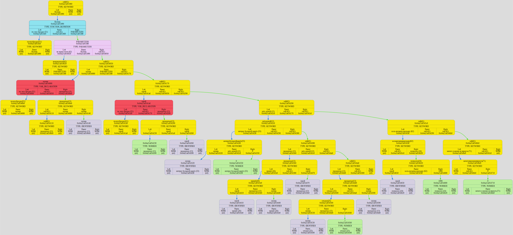

Colors meanings:
unknown what
node
node
keyword
node
node
number
node
node
pointed
node
node
identifier
node
node
function definition
node
node
parameters
node
node
var declaration
node
node
call
node
⮑ left subtree edge ⮑ right subtree edge ⮑ unknown what edge
node
KeyWordsTable:
| Number | KeyWord |
| 75 | всё |
| 76 | позабыл |
| 77 | прыгнул |
| 78 | со |
| 79 | скалы |
| 80 | дикий |
| 81 | крик |
| 82 | издав |
| 83 | но |
| 84 | вышло |
| 85 | не |
| 86 | так |
| 87 | на |
| 88 | ужин |
| 89 | пригласил |
| 90 | зашёл |
| 91 | в |
| 92 | тупик |
| 93 | один |
| 94 | лишь |
| 95 | только |
| 96 | путь |
| 97 | шёл |
| 98 | домой |
| 99 | грохочет |
| 100 | гром |
| 101 | сверкает |
| 102 | молния |
| 103 | краю |
| 104 | холме |
| 105 | наступала |
| 106 | ночь |
| 107 | счастье |
| 108 | обрёл |
| 109 | времени |
| 110 | меньше |
| 111 | посвящает |
| 112 | интерес |
| 113 | большой |
| 114 | нашёл |
| 115 | хватило |
| 116 | силы |
| 117 | весьма |
| 118 | упрям |
| 119 | отличие |
| 120 | смешной |
| 121 | совет |
| 122 | он |
| 123 | знает |
| 124 | во |
| 125 | мраке |
| 126 | ночи |
| 127 | по |
| 128 | лесу |
| 129 | бродил |
| 130 | коль |
| 131 | желаешь |
| 132 | расскажу |
| 133 | ничего |
| 134 | жизни |
| 135 | вернуть |
| 136 | разбойники |
| 137 | вышли |
| 138 | толпой |
| 139 | смыкаю |
| 140 | очи |
| 141 | рухнул |
| 142 | замертво |
| -4 | ) |
| -3 | ( |
| 1 | всё позабыл |
| 2 | прыгнул со скалы |
| 3 | дикий крик издав |
| 5 | но вышло всё не так |
| 6 | на ужин пригласил |
| 9 | зашёл в тупик |
| 11 | один лишь только путь |
| 12 | шёл домой |
| 13 | прокричал |
| 21 | грохочет гром |
| 22 | сверкает молния |
| 23 | на краю |
| 24 | попросил |
| 25 | отказал |
| 26 | принёс |
| 27 | унёс |
| 28 | на холме |
| 29 | наступала ночь |
| 31 | счастье обрёл |
| 32 | времени всё меньше посвящает |
| 33 | интерес большой нашёл |
| 34 | не хватило силы |
| 35 | весьма упрям |
| 36 | отличие нашёл |
| 37 | собрание |
| 38 | смешной совет |
| 39 | он не знает |
| 41 | хей |
| 42 | во мраке ночи |
| 51 | по лесу бродил |
| 61 | хой |
| 62 | коль желаешь расскажу |
| 71 | ничего в жизни не вернуть |
| 72 | разбойники вышли толпой |
| 73 | смыкаю очи |
| 74 | рухнул замертво |
IdNameTable:
Binary Tree[0x16ce2b1f0] born at "/Users/anatolij/Documents/GitHub/Language/Middleware/source/main.cpp": 17, name 'tree'
| Number | Type | DefineStatus | Global | Length | String | LocalVariables |
| 0 | ID_FUNCTION | 1 | 1 | 22 | уносится_в_небо_машина | 6: САМОЛЁТ(0) НЕБО(1) ТРАНСАЭРО(2) ВВС_РФ(3) БОИНГ(4) ПАПА(5) |
| 1 | ID_VAR | 1 | 0 | 7 | САМОЛЁТ | 0: |
| 2 | ID_VAR | 1 | 0 | 4 | НЕБО | 0: |
| 3 | ID_VAR | 1 | 0 | 9 | ТРАНСАЭРО | 0: |
| 4 | ID_VAR | 1 | 0 | 6 | ВВС_РФ | 0: |
| 5 | ID_VAR | 1 | 0 | 5 | БОИНГ | 0: |
| 6 | ID_VAR | 1 | 0 | 4 | ПАПА | 0: |
| 7 | ID_VAR | 0 | 0 | 1 | _ | 0: |
DUMP #1: function ReadTreeStandard was called from /Users/anatolij/Documents/GitHub/Language/Standard/Standard_reader.cpp: 357

DUMP #2: function Simplification was called from /Users/anatolij/Documents/GitHub/Language/Middleware/source/main.cpp: 21
